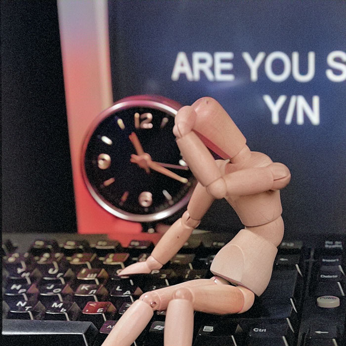
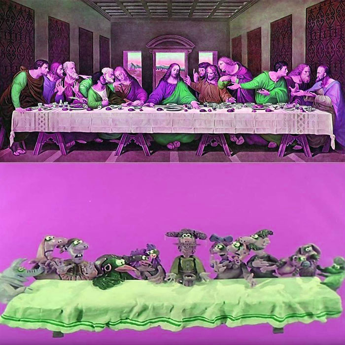
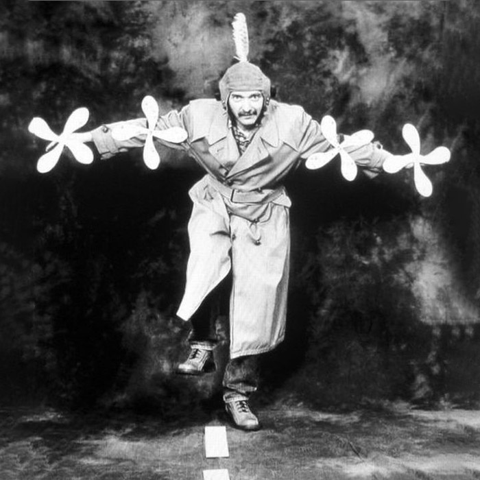
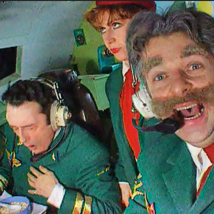
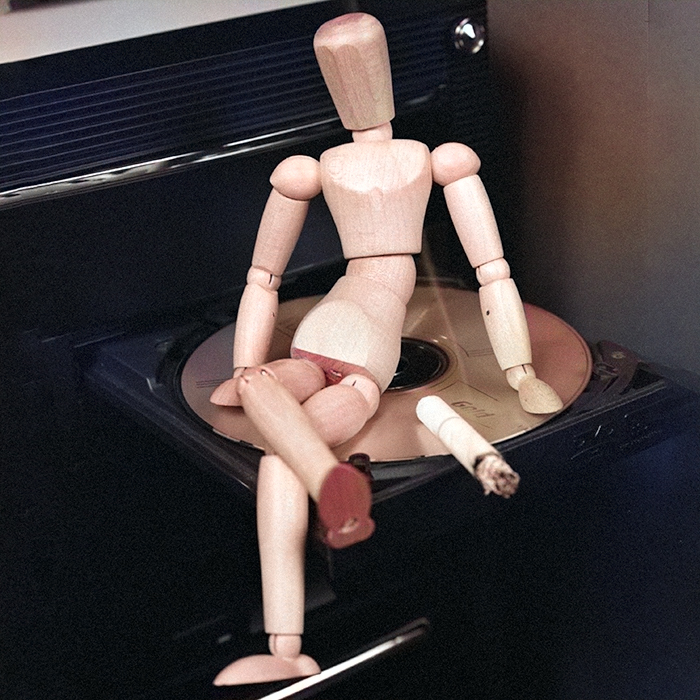
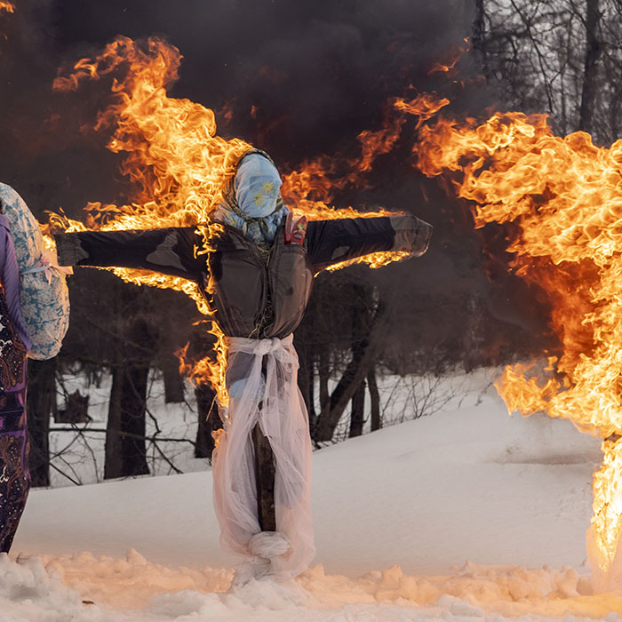
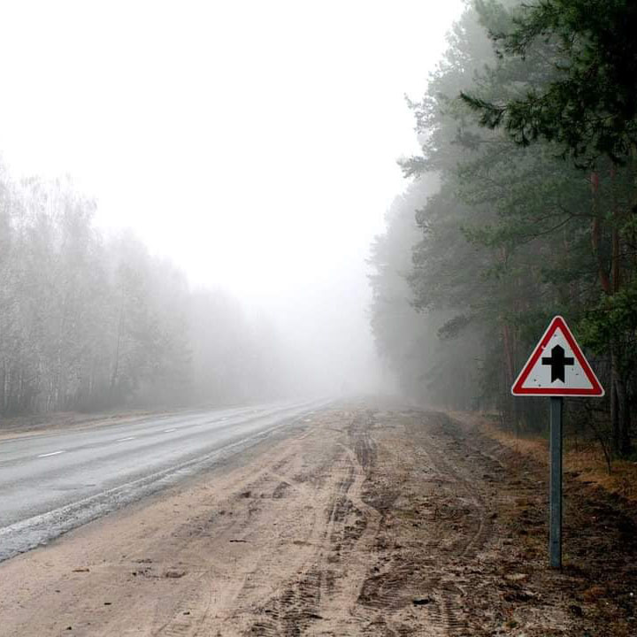

Это было самое начало пути. На этом этапе важно было проникнуться основами и настроиться на учёбу. И, возможно, подумать, как новые знания могут повлиять на ваше будущее.
Немного бесплатного сыра, а куда же без него. Почему бы и не попробовать, и не стать второй раз студентом? Работа – да есть, да хорошая. Зачем становиться студентом? Что бы мозги не ржавели. И так – готовлюсь стать студентом. У меня есть работа, спортзал, участие в нескольких социальных проектах. Осваиваю новые и вспоминаю старые инструменты и подходы, чтобы увеличить сутки еще на 3-5 часов.
1 спринт: Я — чистый лист

</HTML>
На первых этапах мы работали со страхами и сомнениями, которые часто испытывают новички. Один из них — страх перед чистым листом. Это, конечно же, намного сложнее, чем боязнь куска бумаги. Часто за этим ощущением скрываются более глубокие вопросы: с чего начать? а вдруг будет слишком сложно? что, если я не справлюсь?
Мышеловка захлопнулась, ты внутри! Страхи – нет, плавали раньше, знаем. Не получится, тяжело, сложно – это как спортзал: худшая твоя тренировка - та, которую ты пропустил, а вообще чем я рискую? Неприятный сюрприз в виде необходимости второй раз пройти фритрек – да. Итого отставание от основной группы дня на 4-5 по моим ощущениям. Приходилось догонять и раньше, главное стратегия и управление временем. Хоть это и назвали это спринт, но по факту это небольшой марафон.
1 спринт: А если не получится?

<CSS>
Первый проект — позади! Но это всё ещё самое начало пути. Радость могла быстро померкнуть и смениться ожиданием провала. Или вы, наоборот, могли вдохновиться успехами и поверить в себя.
По ночам снится универ – мне это нравится. Первый проект “Оно вам надо”, как-то прошел, особой эйфории не вызвал, сдал дня на 4 позже мягкого дедлайна. На картинке: то как этот проект вижу я и как (скорее всего, но это не точно) увидел это мой ревьюер, и да CSS преображает. Для себя назвал это словом “зачет” и пошел учится дальше.
2 спринт: Погоня за идеалом

<desigions>
На этом этапе вы уже достаточно разбирались в основах вёрстки, чтобы понять, как много ещё впереди. Вы могли попытаться погнаться за идеалом и понять, что он недостижим. А, может, вы вовсе и не подвержены перфекционизму и вместо того, чтобы сделать идеально, старались просто сделать.
На фото Мартин Пуденц (Martin Pudenz) автопортрет, на мой взгляд, один из самых необычных и запоминающихся фотографов. И если куда более весомый Ричард Аведон (Richard Avedon) может потеряться среди глянца, хотя на его счету важные и знаменитые работы, но глянец сделал свое черное дело, то Мартин Пуденц – никогда. Так да, перфекционизм… он разный и у каждого свой. Где-то тут в курсе можно ощутить влияние паттернов, а также личных предпочтений разных подходов. Скорее приходит понимание того, что сверстать страницу в идеал макета сможет даже обезьяна, а сделать это красиво и со смыслом – совсем другая история и именно в ней мы и пытаемся разобраться.
2 спринт: О тех, кто рядом

care
Всё это время вы были не одиноки (хотя, возможно, иногда и чувствовали, что одни против целого мира). Вас окружали одногруппники, команда сопровождения и просто близкие люди, которым можно пожаловаться, если очередной макет просто так не поддавался. Осваивать что-то новое легче, когда рядом есть единомышленники, не правда ли?
Просто оставлю эту картинку, те, кто прошел второй спринт - поймут. Возможные совпадения с реальными людьми и событиями - случайность.
3 спринт: Обходные стратегии

<support>
На этом курсе вы постоянно решали разные задачи. В какой-то момент вам могло показаться, что решения просто иссякли. Значит, пришло время посмотреть на задачу под другим углом.
Основное воспоминание – сдал работу второго спринта в мягкий дедлайн, а про дополнительное задание был не в курсе. Вообще, надо выделить время, чтобы читать все мессенджеры и как-то активнее участвовать в социальной жизни группы. Так образовалась неделя пустоты. И вот он! Наконец! Ждал почти как в первый год каникул в универе – когда же все вновь начнется.
3 спринт: Когда опускаются руки

<lifes-style: none;>
Во время учёбы часто возникает чувство, когда не знаешь, за что хвататься. Вроде и проектную пора сдавать, и задачи хочется порешать, и в теории получше разобраться, и жизнь не забыть пожить. В такие моменты очень нужна концентрация. Вспомните, откуда вы её черпали.
Не знаешь, за что хвататься – сходи в спортзал, схватись за штангу. Руки опускать было некогда. Насыщенный вышел спринт, что было кроме учебы и работы: монтаж проморолика для выставки Мотозима, 4 дня треша и угара на выставке от застройки до спаковки стенда, встречи с друзьями, съемки интервью, монтаж свежего видео…
«Сейчас я здесь»

<experience>
Сейчас вы уже очень много знаете о вёрстке. Но это только начало. Во-первых, впереди ещё много материала про «красотищу». Во-вторых, с окончанием курса учёба не заканчивается. Вёрстка — это целый мир. И этот мир постоянно меняется. Познать его полностью не получится, но это тот случай, когда важен сам процесс познания. Ведь часто путь — и есть результат.
Проектная работа в первой итерации почти готова. И точно подмечено – это только начало, уже почти как та обезьяна о которой говорил ранее – могу верстать некоторые конструкции. Осталось наполнить это действо смыслом. Сейчас завершу эту итерацию, в планах на вечер еще смонтировать одно коротенькое видео и закончить трейлер большого интервью.
Бонусная карточка «О вдохновении»
<inspiration>
"Весь мир – театр, а люди в нем – актёры." Если бы Уильям Шекспир почитал творчество цирка, как много крылатых фраз он бы еще написал? А может, это позже сделал Михаил Зощенко?
Соглашусь с Шекспиром, а от себя добавлю: жизнь всего одна (но это не точно) и играть всего одну роль не каждому по душе. На этом видео совершенно разные люди, но все они собрались в свой выходной, чтобы сыграть совершенно другие роли.
Причем тут учеба и практикум? Все просто: хочется учиться новому, пробовать неизвестное, искать, играть разные роли. Ведь часто путь и есть результат, не так ли?